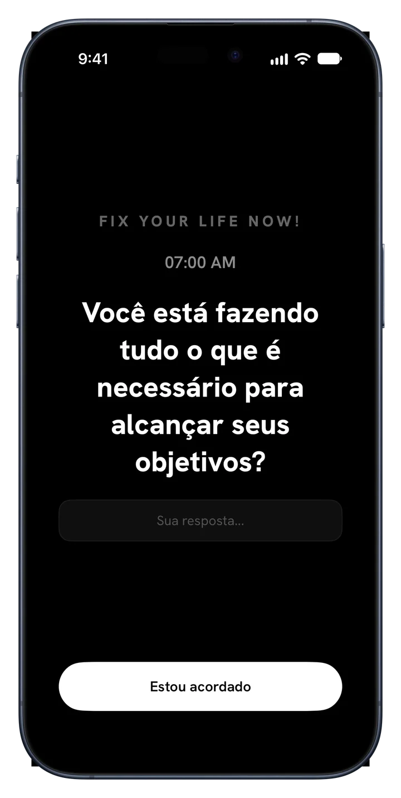
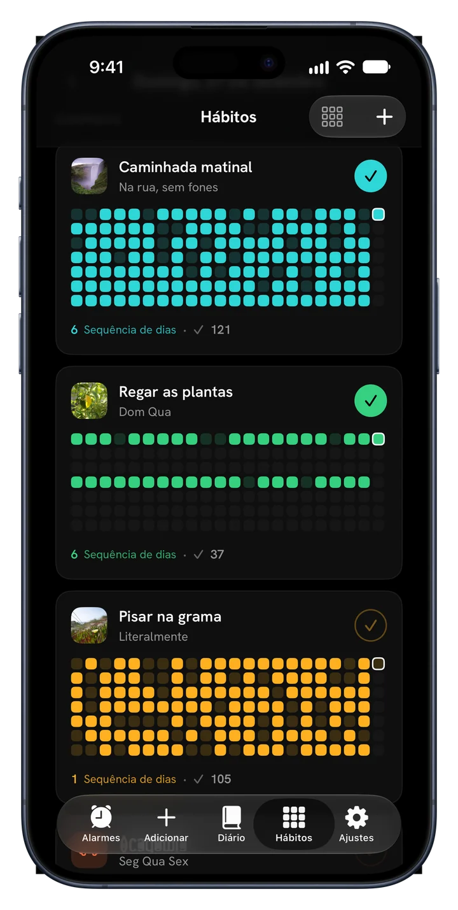
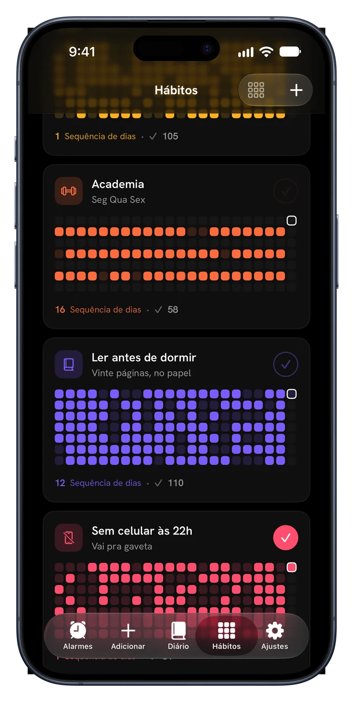
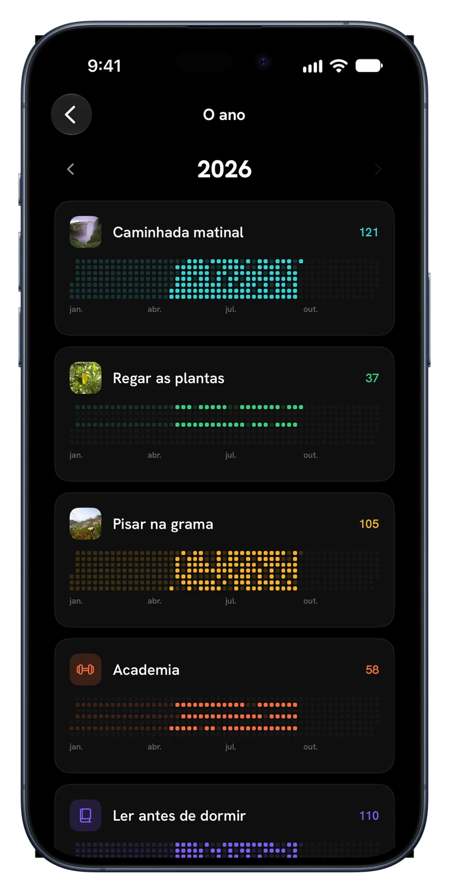
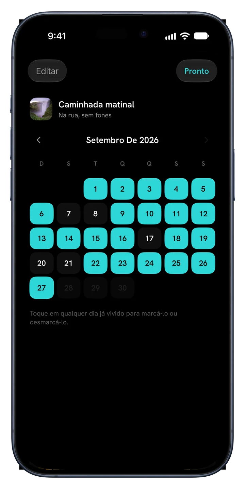
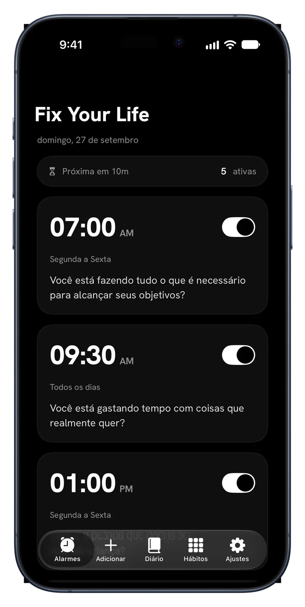
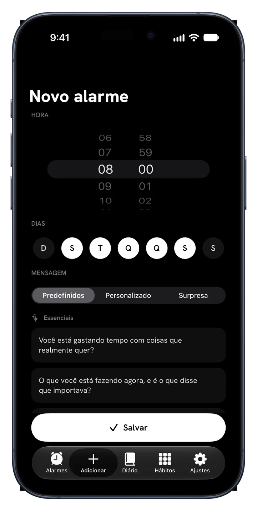
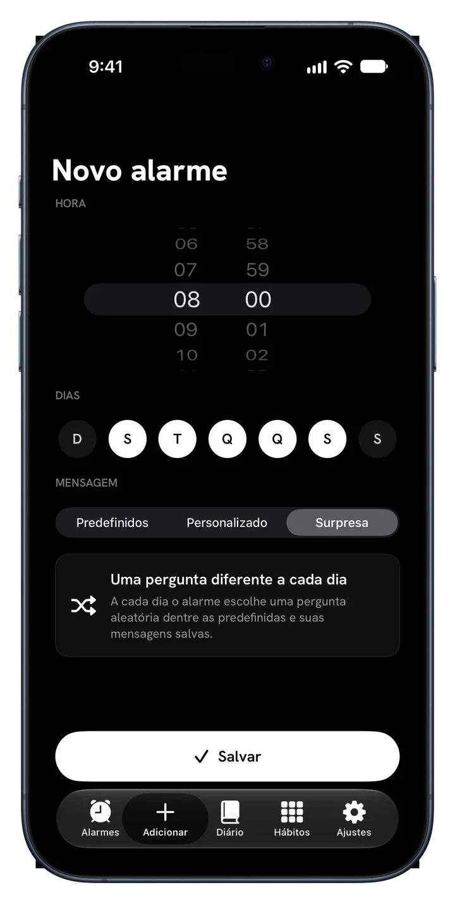
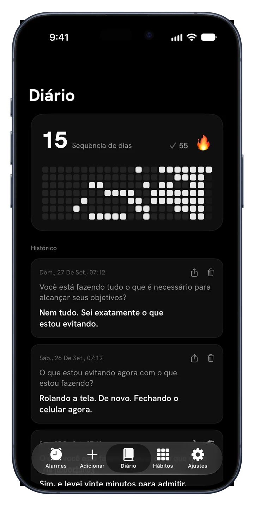
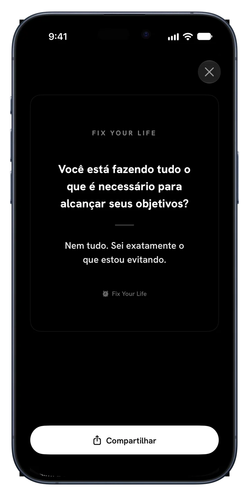

Caminhada matinal
Todos os diasMeio ano, um quadrado por dia
Fix Your Life te acorda com uma pergunta que não dá para adiar e te ajuda a manter o que você decidiu fazer: hábitos com suas próprias fotos, sequências e o ano inteiro em cores.
Download grátis · Um alarme e um hábito grátis, para sempre · Sem anúncios. Nunca.



Novo · Hábitos
Adicione o que você realmente quer manter. Dê um rosto a cada coisa, marque e veja a sequência crescer na sua própria cor.


Meio ano, um quadrado por dia
Meio ano, um quadrado por dia
Meio ano, um quadrado por dia
Por dentro do app
Cada tela é feita para uma coisa só: te acordar para a sua própria vida.

Alarmes com sentido
Defina alarmes para qualquer hora e qualquer dia. Cada um traz uma pergunta em vez de um barulho que você silencia e esquece. Responda em uma linha e o dia começa com honestidade.

34 perguntas · 6 pacotes
Essenciais, Ambição, Tempo e mortalidade, Identidade, Espelho honesto e Estar vivo. Não são afirmações. São as perguntas que você vinha evitando. Ou escreva as suas.

Modo Surpresa
Repetição vira ruído de fundo. O modo Surpresa escolhe uma pergunta nova para cada dia da semana, e o alarme nunca perde a força.

Um diário que pergunta primeiro
Cada resposta é salva com a pergunta e a data. A sequência, o mapa de calor e o histórico estão lá, e a constância vira algo que você consegue ver.

Widgets
Sua sequência e a pergunta do dia, para que a primeira coisa que você veja seja o que você vinha evitando.

Compartilhe as vitórias
Transforme qualquer resposta em um cartão limpo e compartilhe onde quiser. Suas respostas são a prova de que você apareceu, e algumas merecem a luz do dia.
Como funciona
Seu plano fica pronto antes do fim do primeiro minuto.
Manhãs, disciplina, saúde, foco, tempo de tela ou sono. Seu plano é montado em torno disso.
Escolha a hora. Ele toca todo dia com uma pergunta que combina com o que você escolheu.
Pequeno, diário e seu. Coloque uma foto, escolha uma cor, marque.
Cada dia cumprido acende um quadrado. Falhou um, aparece. Continue e o ano se enche de cor.
Preços
Um alarme e um hábito são grátis para sempre, com todos os recursos. O Premium é para sustentar um dia inteiro deles.
$0 para sempre
Sem cartão, sem teste
$17.99 / ano
3 dias grátis · cerca de $0.35 por semana
$39.99 uma vez
Um só pagamento, sem assinatura
Também disponível semanal por $4.99. Preços em dólares americanos; a App Store mostra o preço do seu país. O teste grátis é para novos assinantes do plano anual.
Dúvidas
“Se alguém filmasse as últimas duas horas da sua vida, concluiria que você quer o que diz querer?”
Uma pergunta de manhã. Um quadrado por dia. É assim que um ano muda de cor.
Baixar naApp StoreDownload grátis · 45 idiomas · Sem anúncios. Nunca.